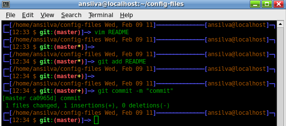

The reason why I have switched to zsh - Part 2
By Anderson Silva and Matt Woodson
Last month, Matt and I decided to share with you why zsh is worth a try. Matt shared his .zshrc in the article, and we started to walk you through a few of the ‘goodies’ available under zsh. We concluded the first part of this zsh series by promising you we would tackle a few more zsh features this month. Well, here they are:
Spelling correction
In bash, mistype vim and you will likely get the infamous: “command not found” message on your terminal. In zsh:
$ ivm
zsh: correct 'ivm' to 'vim' [nyae]?
To turn on this feature add: setopt CORRECT to your .zshrc
If you feel really lucky, you can tell zsh to try to correct your mispellings even in the argument list by using: setopt CORRECT_ALL.
Extended Globbing
Do you find ‘find’ (no pun intended) a bit too cumbersome to use? Don’t get me wrong, I love the find command, but zsh gobbling makes some forms of the find command look a bit ugly.
Here’s a few examples:
1. Find all executable files by owner under current directory and sub-directories:
With find:
$ find . -perm -u+x -type -f
With zsh:
$ ls -s **/*(.x)
2. Find files that are larger than 100MB in size under current directory and sub-directories:
With find:
$ find . -type f -size 10M
With zsh:
$ ls **/*(.Lm+100)
3. List all non jpg files under directory and sub-directories:
With zsh:
$ ls **/^*.jpg
You can turn on extended globbing on your .zshrc by adding:
setopt extendedglob
If you would like to see all the globbing options for ls zsh support enter:
$ ls *(<tab> completing glob qualifier % -- device files ) -- end of qualifiers * -- executable plain files + -- + command name - -- follow symlinks toggle . -- plain files / -- directories : -- modifier = -- sockets @ -- symbolic links ...
Aliases
zsh has many different types of aliases, including regular, suffix, and global.
Regular aliases are treated the same as in bash. These alias need to be run in the command position (first thing typed) on the terminal. e.g:
alias ll=’ls -la’
Suffix aliases execute a command based on a file’s extension. Suffix aliases are used with the alias -s command. Here’s my favorite feature of aliases in zsh. By adding this line:
alias -s html=vim
when you enter a file name with the .html extension, something like:
$ index.html
zsh will automatically invoke vim to open up that file.
Global aliases can be used anywhere in the command line, not just the command position. This is best seen by example. The global alias defined:
alias -g G=’|grep ‘'
This would be invoked like this:
$ cat /var/log/messages G ERROR
This will put it in the pipe with the grep command.
Floating Point Math
Given the following shell script:
(( X = 5.0 + 0.5 )) (( Y = 33.0 / 9.0 )) echo $X echo $Y
Output:
5.5000000000 3.6666666667
Many times in bash I have needed to do floating point math calculations for a variety of reasons. Now, with zsh, you don’t need to invoke external programs like bc or perl just to do a floating point math calculation.
Version Control Information on Your Prompt
If you ever used git, you probably have checked a branch, and then forgot what branch you were in, and ran: git branch -a to locate yourself within the repo. In zsh, a person can set up their prompt so it will display all the relevant information needed while navigating some of the most populate version control systems out there.
The following needs to happen to get your VCS information displayed:
1. Load the vcs_info module into zsh. You can achieve this by adding the following to your .zshrc:
autoload -Uz vcs_info
2. Set the zstyles for the vcs_info. Here, you will be able to tell what type of VCS it should detect, and how it should behave. For a more in depth look at zstyles for vcs_info check out the zsh manual page.
zstyle ':vcs_info:*' enable git cvs svn
If you take a look at Matt’s zshrc file from last month, you will see a few other zstyles configured to manage color and behavior of the vcs_info function.
3. Call vcs_info function before each prompt. This will be accomplished by a really interesting zsh function called precmd(), which will discuss on part three of the zsh series.
precmd() {
vcs_info ‘prompt’
}
4. Set the PROMPT variable with vcs_info_msg_0_ variable. In zsh, PROMPT is the same as PS1.
PROMPT='${vcs_info_msg_0_}%B%F{blue}]─>
%f%b’'

In this screenshot, my prompt tells me what vcs I am using, git, in which branch of the repository I have currently checked out, master, and in what stage of the commit is currently being displayed. The yellow asterisk ‘*’, means I have modified a file.
The yellow plus ‘+’, means I have added the file, but still need to commit it.
Vertical Argument History
Ok, I made up the name ‘Vertical Argument History’, but bear with me. Do you know how in bash (and zsh), while on the command line one can use the up and down keys to move through the shell history?
In bash, you may be familiar with Alt-., which takes you to the last argument of the previous entry from your history. Well, in zsh, one can use: Alt-/ (slash) and Alt-, (comma) to move through the argument history of your shell history... Get it? Check this out:
$ touch 1 2 3 4 5 1 2 3 4 5 $ cp <Alt-Slash> /tmp
The above command with the Alt-/ shortcut will generate:
$ cp 5 /tmp/
Hit Alt-/ twice, instead of once and it will execute:
$ cp 4 /tmp/
As you hit Alt-/ and go through the list of previous arguments, you can use Alt-, to go back through the arguments.
Conclusion
I don’t claim to be a zsh expert, and
during the past few weeks, I have been picking Matt’s brain every time I
have a question about it, and every time he figures out a new feature he is
kind enough to share with me. Hopefully, the above has given you a few more
reasons to give zsh a try, and we look forward to finishing up the zsh series
next month when we will write about the precmd() and preexec() functions in zsh
and give you an example or two of how to use it.
| Share |

|
Talkback: Discuss this article with The Answer Gang
Anderson Silva
![[BIO]](../gx/authors/silva.jpg)
Anderson Silva works as an IT Release Engineer at Red Hat, Inc. He holds a BS in Computer Science from Liberty University, a MS in Information Systems from the University of Maine. He is a Red Hat Certified Architect and has authored several Linux based articles for publications like: Linux Gazette, Revista do Linux, and Red Hat Magazine. Anderson has been married to his High School sweetheart, Joanna (who helps him edit his articles before submission), for 11 years, and has 3 kids. When he is not working or writing, he enjoys photography, spending time with his family, road cycling, watching Formula 1 and Indycar races, and taking his boys karting,
Matt Woodson
![[BIO]](../gx/2002/note.png)
Matt Woodson works as an IT Software Enginner at Red Hat, Inc. Matt has been involved with many different postitions at multiple Linux companies including Red Hat, Novell, and Caldera. He has done jobs that range from systems administration, networking, to quality engineering. He is a Red Hat Certified Engineer, who spent time teaching RHCE classes in all parts of the country. Matt, and his wife Mariah, of 3 years, are expecting their first daughter in Feb 2011.